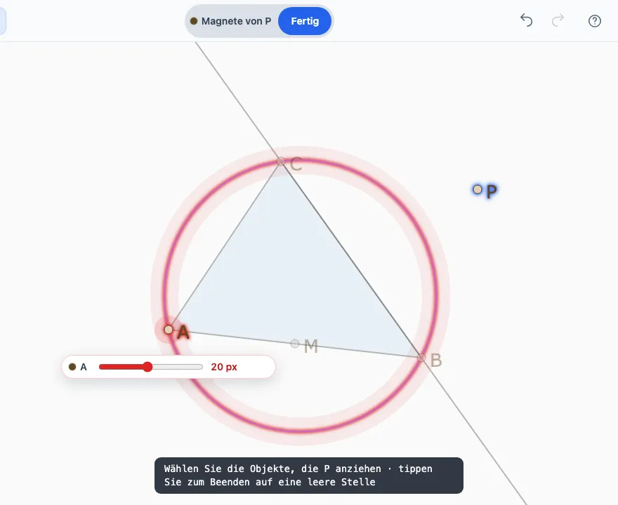

Magnete, Reißzwecke und Feder
Magnete
Ein magnetischer freier Punkt haftet an den gewählten Objekten, wenn man ihn in ihre Nähe zieht, ohne an sie gebunden zu sein.

- Den freien Punkt auswählen, dann Magnete. Der Rest der Figur liegt unter einem Schleier.
- Jedes anziehende Objekt antippen (Punkt, Gerade, Kreis, Kegelschnitt, Kurve, Liste): Es wird rot, Anfangsanziehung 20 px. Der Punkt und seine abhängigen Objekte sind ausgeschlossen.
- Die Anziehung des gewählten Magneten mit dem Schieberegler seiner Karte einstellen: Keine (entfernt den Magneten), 1 bis 1000 px, Überall. Die Anziehungszone jedes Magneten ist blassrot gezeichnet.
- Mit Antippen einer leeren Stelle, Fertig oder Esc beenden.
Der Punkt lässt sich während der Einstellung zum Ausprobieren ziehen. Jede Einstellung ist ein Rückgängig-Schritt.
Reißzwecke
Am Bildschirm fixieren (freier Punkt): Der Punkt behält beim Zoomen, beim Verschieben der Ansicht und, in 3D, beim Drehen des Koordinatensystems seinen Platz im Fenster, nicht seine Koordinaten. Er bleibt verschiebbar. Zweites Drücken: aufheben. Dasselbe Kästchen steht im Abschnitt Punkt des Eigenschaftenfelds.
Feder
Animieren (Punkt auf Gerade, Strecke, Strahl, Kreis, Bogen, Vieleck, Kegelschnitt oder Ortslinie, oder Schieberegler) lässt unter dem Punkt bzw. unter dem Griff des Schiebereglers eine Feder mit einer Kugel am Ende erscheinen.
- Die Kugel ziehen und loslassen startet das Objekt; während des Ziehens zeigt ein Schatten des Punktes bzw. des Griffs bereits die Bewegung.
- Länge: Geschwindigkeit, in angezeigten Stufen (px/s auf einer Geraden, einem Vieleck oder einem Kegelschnitt; °/s auf einem Kreis; % auf einer Ortslinie oder einem Schieberegler).
- Seite: Richtung; das Objekt läuft entgegen der Zugrichtung: Ein nach links (wenn senkrecht, nach unten) gezogener Schieberegler nimmt zu.
- Quer zu einer Geraden oder einem Schieberegler (mehr als 45°): hin und her. Sonst läuft das Objekt im Kreis.
- Unterhalb der ersten Stufe: Stopp.
Bei einem bereits animierten Objekt erscheint die Feder gespannt auf die aktuelle Geschwindigkeit. Zweites Drücken auf : Die Feder wird weggeräumt. Genaue Geschwindigkeit, umgekehrte Richtung, Anhalten am Ende: Abschnitt Animation der Eigenschaften.